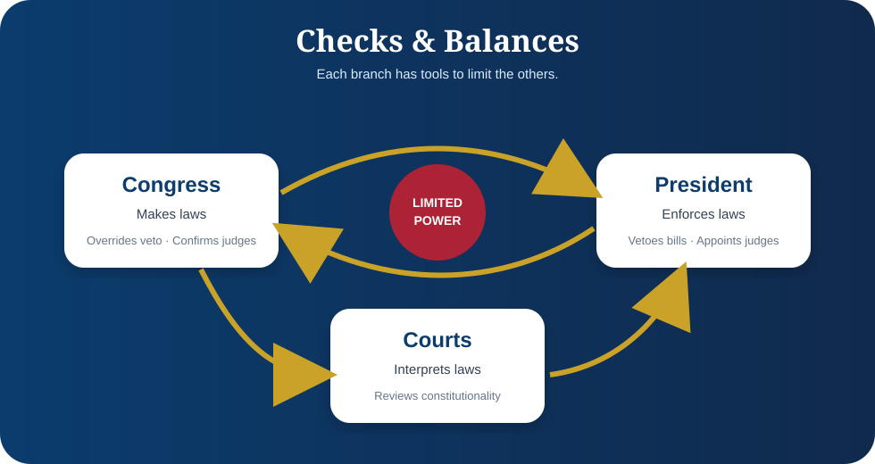

Judicial reference
Supreme Court Cases
A plain-English reference for landmark cases connected to the Constitution, rights, courts, and citizenship education.

1803
Marbury v. Madison
Established judicial review.
1954
Brown v. Board of Education
Rejected racial segregation in public schools.
1961
Mapp v. Ohio
Applied important search-and-seizure protections to states.
1963
Gideon v. Wainwright
Required counsel for many criminal defendants who cannot afford an attorney.
1966
Miranda v. Arizona
Required warnings during custodial interrogation.
1969
Tinker v. Des Moines
Recognized student speech rights in schools, with limits.
1974
United States v. Nixon
Confirmed the President is not above lawful judicial process.
Remember This
The Supreme Court does not write laws. It interprets laws and the Constitution, resolving disputes when real cases reach the courts.